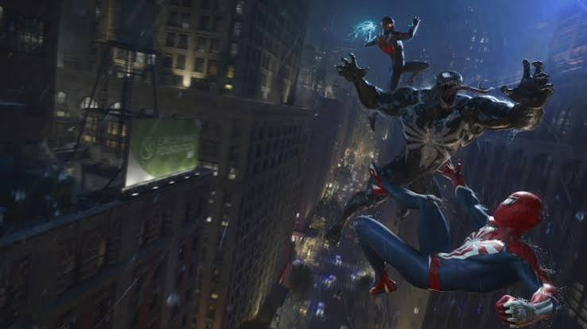
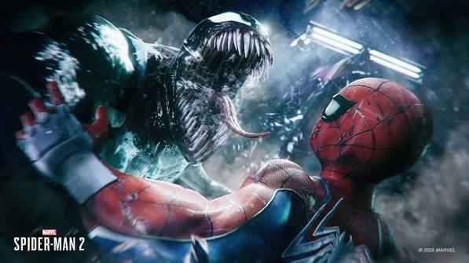

Análisis: Marvel's Spider-Man 2
Insomniac Games perfecciona su fórmula. Marvel's Spider-Man 2 es más grande, más rápido y ofrece una historia mucho más oscura y personal al poner a Peter Parker y Miles Morales frente a amenazas como Kraven y Venom.
Recorriendo Nueva York
El desplazamiento siempre fue el punto fuerte, pero con la inclusión de las Alitas de Telaraña (Web Wings) y la potencia de la nueva generación, recorrer la ciudad es un espectáculo absoluto y vertiginoso.

El traje simbionte aporta un combate brutal y diferente.
Conclusión
Una secuela ejemplar que sabe cuándo apostar por el espectáculo cinematográfico y cuándo centrarse en el drama humano de sus protagonistas.
Nota final
9.2
/ 10